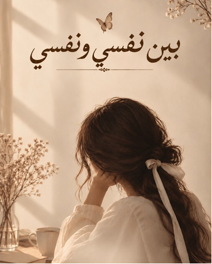

ليست كل الحكايات تُروى، ولا كل المشاعر تجد طريقها إلى الكلام. بعض ما يسكننا لا يحتاج إلى تفسير، بل إلى لحظة صدق نقف فيها أمام أنفسنا، بعيدًا عن ضجيج الآخرين، ونسأل: ماذا بقي مني بعد كل ما مررت به؟

مساحة هادئة للعودة إلى الذات، وفهم ما تغيّر فينا مع الوقت.
هذا الكتاب ليس حديثًا عن الحياة بقدر ما هو حديثٌ مع النفس. عن تلك الأشياء التي نكتشفها متأخرين، وعن الأشخاص الذين غيّروا شيئًا فينا، وعن الخيبات التي لم تكن نهايات، بقدر ما كانت بدايات لفهمٍ أعمق لأنفسنا.
هو مساحة للتأمل في مشاعرنا وحدودنا وعلاقاتنا، وفي النسخة التي نصبح عليها بعد أن تعلّمنا أن نختار أنفسنا دون أن نفقد إنسانيتنا.
محطات بين النفس والعلاقات والحياة، كما تتشكل حين ننظر إليها بصدق.
عن التصالح مع الذات، ورؤية النفس بعيدًا عن مقاييس الآخرين.
عن الدروس التي لا نعرف قيمتها إلا بعد أن نعيشها.
عن القرب والخذلان والحدود التي تحمي ما تبقى منّا.
عن التغيّر، والبدايات، والأشياء التي تعيد تشكيل نظرتنا للحياة.
عن الحفاظ على النور الداخلي مهما أثقلت الأيام.
رسائل هادئة إلى الذات، حين تحتاج أن تسمع صوتها من جديد.
عن النضج الذي يجعلنا نرى الأحداث القديمة بعين مختلفة.
كلمات لمن يحتاج أن يتوقف قليلًا ويمنح نفسه بعض الرحمة.
«أشدّ ما يؤلم الإنسان، أن يظلّ متمسّكًا بما يؤذيه، خوفًا من أن يكتشف أن الرحيل كان أرحم.»
«ليس كل من اقترب منّا عرفنا، وليس كل من عرفنا استطاع أن يفهمنا؛ فبعض الأرواح لا تُقرأ من ظاهرها، وإنما تُفهم حين يُصغى إلى صمتها.»
«نحن لا نتغيّر لأننا أردنا أن نبتعد، بل لأننا تعلّمنا أن بعض الأماكن لم تعد تتّسع للنسخة التي أصبحنا عليها.»
«أحيانًا لا نحتاج إلى إجابة، بقدر ما نحتاج إلى أن نتصالح مع السؤال الذي ظلّ يسكننا طويلًا.»
«كبرنا حين أدركنا أن بعض الخسارات لم تكن فقدًا لما نحب، بل نجاةً مما كان يطفئنا دون أن نشعر.»
«حين نعرف أنفسنا حقًا، لا نعود بحاجة إلى أن نشرح قيمتنا لكل من لم يرها.»